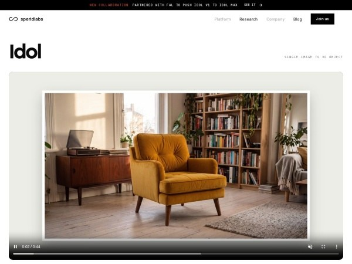

Idol 單圖生成 3DGS：ComfyUI 輸出與網格轉換限制
11 月 24 日的介紹整理 Speridlabs 於 2026 年 10 月公開的 Idol：由單張照片或渲染圖推估物體側面與背面，生成 3D Gaussian Splatting。原 SDK 可存 PLY，ComfyUI 模板另提供 SPZ、預覽影片及轉換後的 GLB。

AI 2D ★★★★☆
完整分析
前處理與 Gaussian 數量
Idol 自動移除背景，照片用 real 模式、渲染或生成圖用 synthetic 模式，兩者裁切留白不同。Gaussian 數可設為 32,768 至 1,048,576，預設 262,144；SDK 命令列還會輸出前處理圖片及推估的輸入相機資訊。
ComfyUI 與 Blender 的銜接
Comfy-Org 的模板沿用 TripoSplat 節點結構並換用 Idol checkpoint，可輸出環繞預覽、SPZ 與轉網格 GLB。文章另指出 Blender 5.3 能匯入 PLY、SPZ 的 splats，以點雲交由 Geometry Nodes 處理及 EEVEE、Cycles 渲染。
轉網格與運算需求須分開看
模板說明指出預設 GLB 可能達數百萬三角形，細繩、欄杆或毛髮可能變細或殘留背景色。SDK 需 Python 3.10、PyTorch 2.5 以上，標準設定還須取得 DINOv3 與 FLUX.2 [dev] 存取權；模型公開不代表所有依賴都免申請。
BRIEF｜來源已驗證；證據深度較有限，完整分析會明確區分已知資訊與待驗證事項。